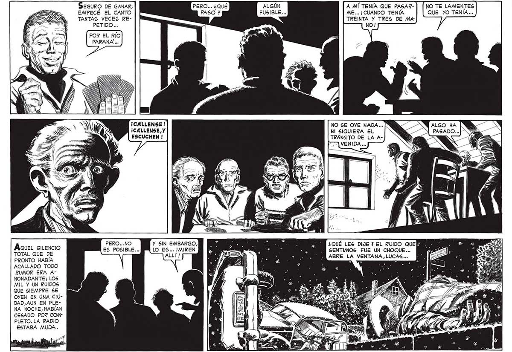

Aquel silencio TOTAL QUE DE PRONTO HABÍA ACALLADO TODO RUMOR ERA ANONADANTE; LOS MIL Y UN RUIDOS QUE SIEMPRE SE OYEN EN UNA ClUDAD,AUN EN PLENA NOCHE, HABÍAN CESADO POR COMPLETO. LA RADIO ESTABA MUDA. SEGURO DE GANAR, EMPECÉ EL CANTO TANTAS VECES REPETIDO... POR EL RÍO PARANA ... PERO... NO ES POSIBLE... PERO... ¿QUÉ —_ Y SIN EMBARGO, LO ES... IMIREN 13570-657 ALGÚN A MÍ TENÍA QUE PASARFUSIBLE... ME... ¡CUANDO TENÍA TREINTA Y TRES DE Mar NO ! NO TE LAMENTES QUE YO TENÍA .. NO SE OYE NADA... NI SIQUIERA EL TRÁNSITO DE LA A¿QUÉ LES DIJE ? EL RUIDO QUEÑ SENTIMOS FUE UN CHOQUE... ABRE LA VENTANA, LUCAS... ES 19
